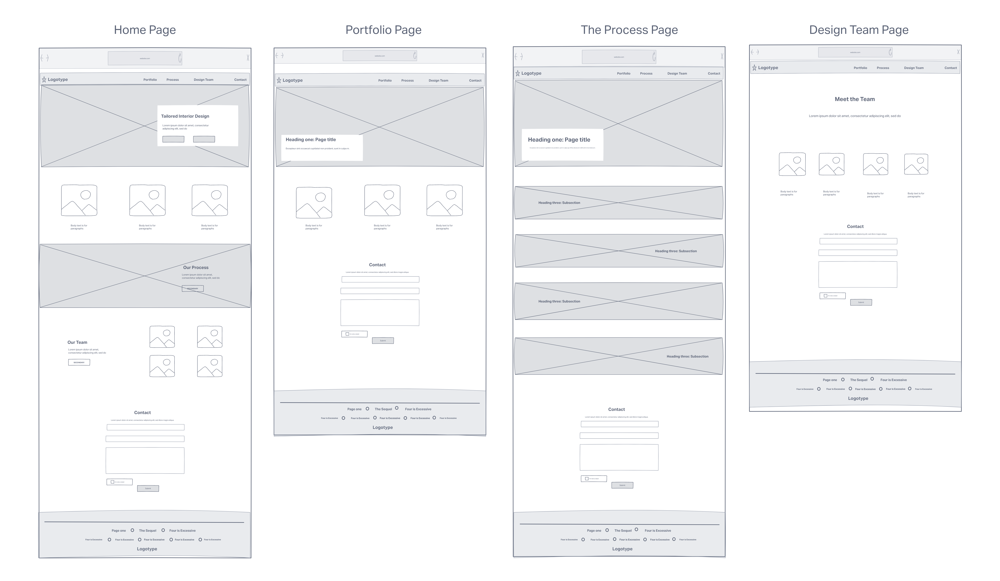

Haus Interior Design is a website for an fictional interior design company. The website needed to provide information about the company; contact details, location and to display a portfolio of the company's projects. There needed to be a page for each designer so that the client could know who the team comprised of.
I made the logo and chose the colour Zephyr, as it is relaxing like similar to a warmer tone of lavendar.The colour is the main colour amongst white for the call of action buttons. The images are from Pexels and Unsplash and I added reCaptcha to the contact form.
The wireframe was made with invision and displays the main pages of the site.
